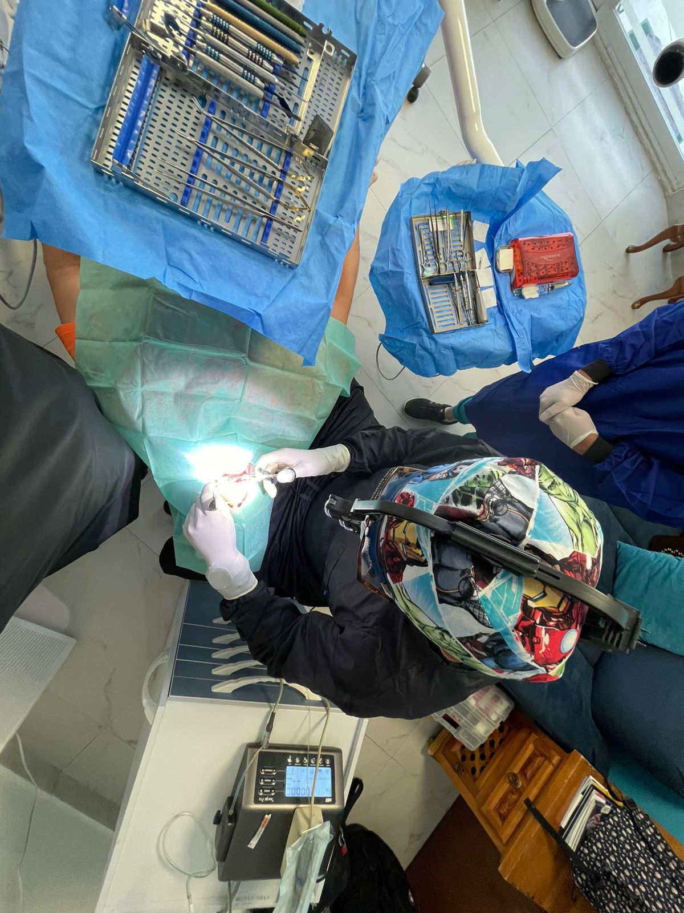
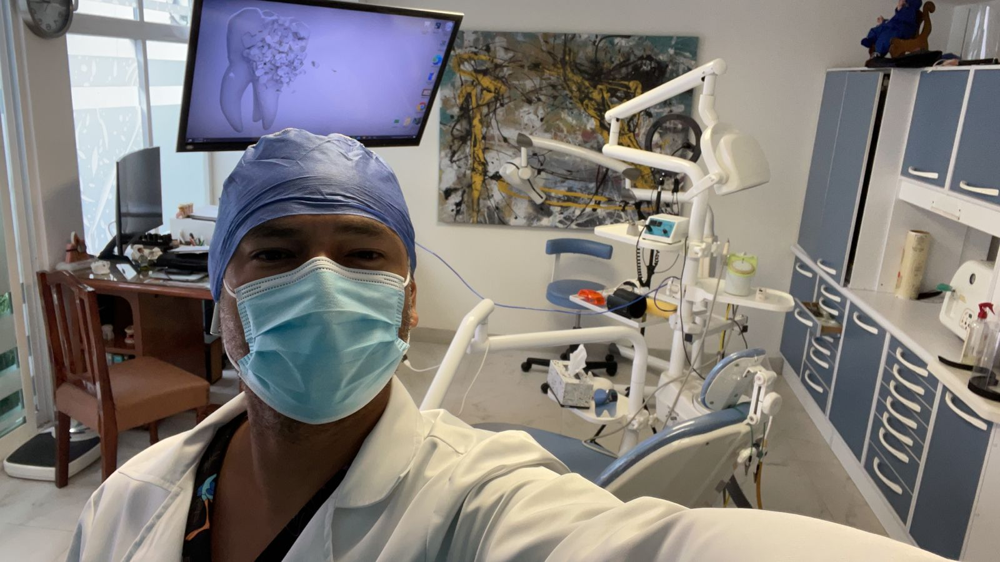
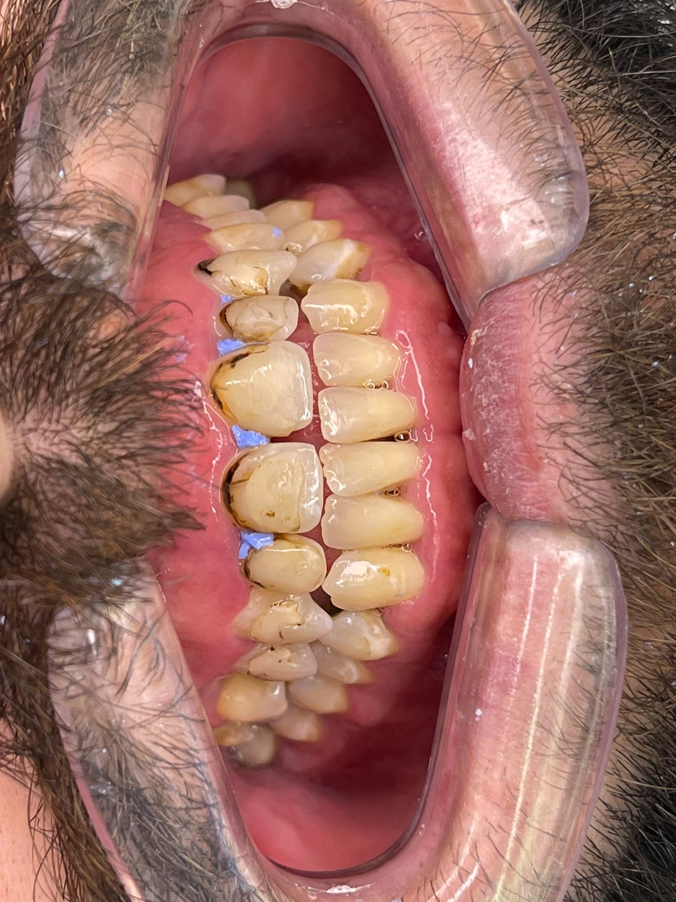
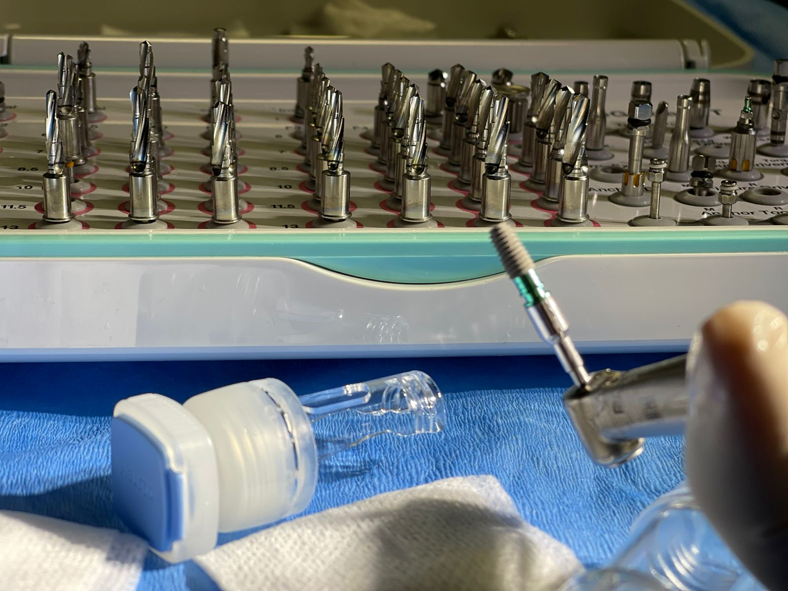
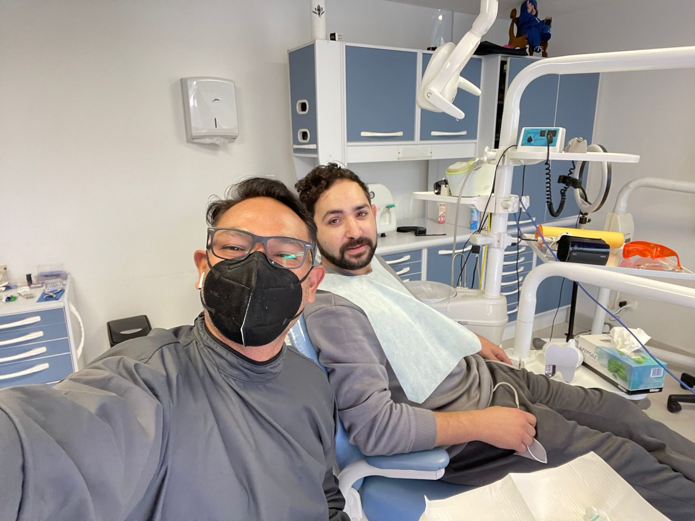

Give Your Teeth The Best Care Possible
Phases Of Implant Placemet

Surgical phase of dental implant placement
In the 1st phase we will introduce the dental implant into the bone so that the
osseointegration or fixation of the implant and the bone begins.
When we already have the implant inserted, we will decide what type of plug we will put
inside the implant depending on the needs for the particular case.
Sometimes we are interested in completely closing the gum if we had to regenerate
the bone, or the patient has poor healing (generally smokers). In this case implant
is closed with special closing plag.
This closing plug is fully inserted into the implant, that is, it does
not increase the height of the implant, therefore the gum will close completely and nothing
underneath will be seen. Many times patients say "I can't see the implant,
but I see something under the gum".
What we are interested in is to take advantage of the surgery to leave the gum in such a
way that it heals the same moment that the bone heals, then thread a closing plug into the
implant. This does increase the height of the implant and will make the plug visible as the gum heals.
Cosmetic phase of dental implant placement
The 2nd phase or second surgery will consist of changing the closure plug (flat plug)
for a healing plug (higher plug), also called 'healing button'.
Therefore, the second surgical phase will only be necessary for patients who didn't have a
closing plug placed on the day of the intervention.
The operation is simple and the post-operative period allows you to have a normal life the same
day when you leave the office. With a little anesthesia we will make a small incision in the gum
to connect the closing cap with the oral cavity. Then unscrew the cap inside the dental implant
and screw the healing cap in its place. Sometimes we have to put stitches to fix the gums.
Dental Services During COVID-19

Who could imagine that the world could change in a moment?
Our lives are overthrown by the Novel Covid-19, and especially for doctors.
It’s never been easy to be a doctor. First you need to study for many-many years,
trying to learn every tiny detail of your future career, even during nights.
You are taking exams, shaking during those days of practice, attending your first
patients. Then years of public service in some far away cities or even countries
that barely have any health system. And when you think that the worst part is over
and you have your license and ready to start your practice, you suddenly realize
that your journey is just starting.
Even though you’ve studied so hard, for so
long you still have much more to learn. To be a doctor is a lifetime journey!
You have to learn something new everyday, and not only your profession wise, but
humanity, philosophy, ethics, psychology, and even more importantly - about yourself...
We have our fears, and our limits, and our own lives to build, as well as our own
families to care for...
But today we push those limits and risk ourself even more to serve YOU.
To be a doctor is not about getting something, it’s about giving something, and account
for every obstacle on the way. And we are adapting, while giving YOU the best care
possible no matter what.
Just don’t forget - we are all in this together!
Tooth Decay is Reversable!

Did you know you could stop and even reverse tooth decay?
To understand how to do this we need to look at what is happening in our
mouth all day long.
There are hundreds of different types of bacteria that live on teeth, gums,
tongue and other places in our mouth. Not all bacteria are the same. There
are some helpful and there are some bad bacteria. Tooth decay is an infectious
process caused by harmful bacteria that uses sugars in food to make acids, which
over time can create a cavity.
So how does it all work?
Dental plaque - sticky, colorless film of bacteria builds up over time on our teeth.
When we eat or drink something that contains sugar or starch, bad bacteria is
converting it to acids. These acids begin to eat away enamel - hard outer surface
of a tooth. When this process repeats over and over again, without proper cleaning
and care, enamel looses its minerals, softens and converts to a white spot. This white
spot is a sign of early decay. At this point tooth decay can be spotted and reversed
by using minerals from saliva, fluoride remineralization and other sources. But if
this early decay process goes untreated tooth demineralization continues. Over time
the enamel gets completely destroyed and a cavity forms. A cavity is a permanent damage
that a dentist should repair with a filling.
Don’t wait until it’s too late. It’s better to prevent than to treat!
Dental Implants and Why Should You Consider Them

What is a dental implant?
Dental implant is a permanent replacement for missing tooth. A titanium rod is placed
in your jaw to replace the roots of your original tooth. An abutment and crown are placed
on the implant to provide you with a new tooth that looks like a natural tooth.
How do dental implants differ from dentures?
Denture is a complete or partial set of removable teeth, and they require a special kind
of care to stay clean and functional. They can often feel bulky and can be difficult to get
used to. Dental implants are permanent replacements for missing teeth and can be cared for
using the same oral hygiene practices used to care for your natural teeth, including regular
dental cleanings and exams.
What are the benefits of dental implants?
Dental implants look and feel like real teeth. In many cases, dental implants can be stronger
than your natural teeth. You can enjoy your favorite foods without any fear of ruining a dental
surfice. Dental implants have a high success rate, and are generally less expensive than
other procedures in a long run.
Why Do You Need a Professional Dental Cleaning

Why our teeth need a professional cleaning?
Think of a professional cleaning as a super weapon against dental plaque, that is, as an
arsenal that fights gum disease. Home oral hygiene done on a regular basis protects against
plaque, but only for a limited time. Plaque builds up on the surface of the teeth and on the
gum line, and it eventually turns into tartar.
But Do I Really Need To Go For Professional Dental Cleaning?
A professional cleaning helps safeguard our permanent teeth, our health and our wallet in the long run.
Consider all the costs in terms of stress, money, and time required for a root canal, extraction,
or implant. Additionally, periodontal disease can also adversely affect our overall health, and
it has been linked to heart disease, dementia, and even strokes. So Yes, you really need to go
for your regular dental cleanings with the professional!
When did you have your professional dental cleaning last time?